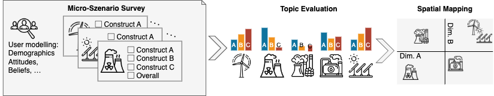
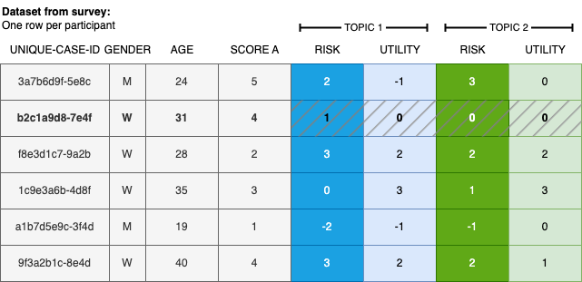
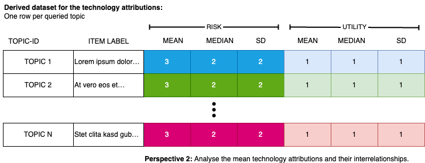
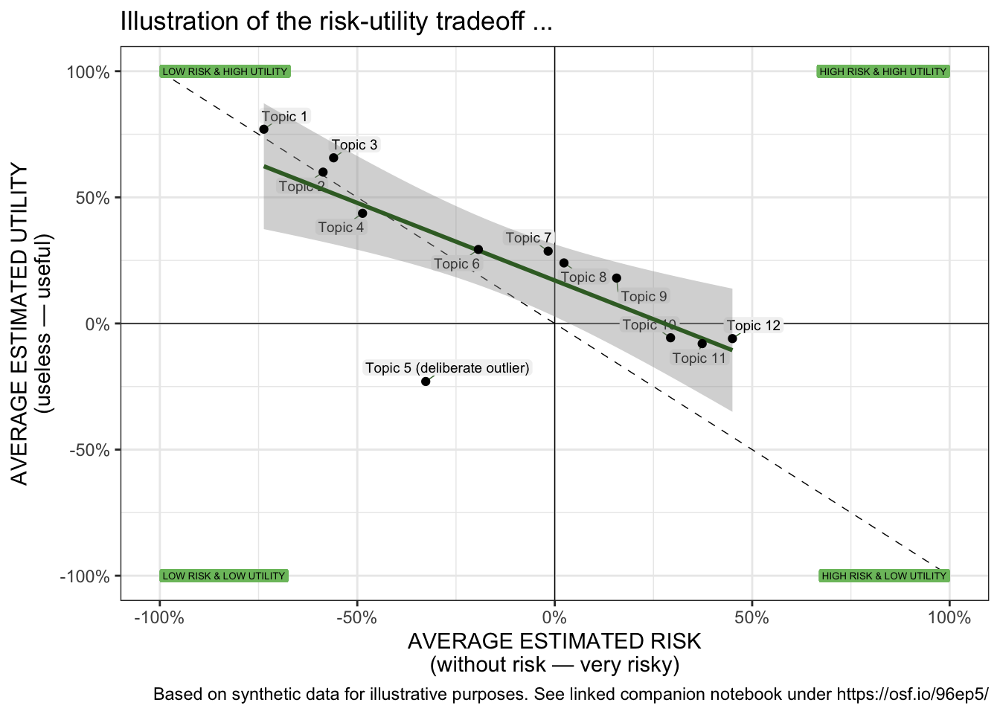
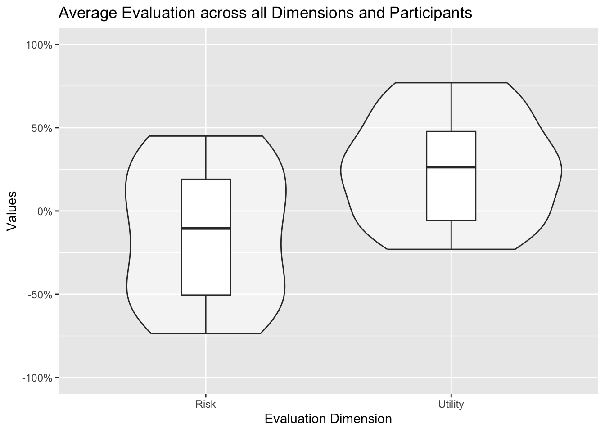

This R notebook serves as an example, demonstrating the analysis and visualization of micro-scenario-based studies. Micro-scenarios provide an approach for evaluating the social acceptance of technologies and the determining factors, along with visuo-spatial mappings of the results. They enable a) the simultaneous assessment of multiple technologies, ranking them based on different criteria, and b) analyzing how individual factors and technology-based attributions correlate with the overall assessment of technologies. Utilizing synthetic survey data (generated in a separate notebook), this notebook illustrates how to recode the data, aggregate scenario scores as user factors, calculate topic scores, and visualize them using the R programming language, along with ggplot and tidyverse.
The micro-scenario approach simplifies measuring people’s opinions on different topics (see overview). Based on a single survey, the approach combines participants’ responses into three complementary outputs: 0) a grand mean serving as a general evaluation of the whole topic field, 1) individual user factors as reflexive measurements of latent constructs (research perspective 1), and 2) topic-level evaluations for ranking topics and creating visual maps to pinpoint areas of concern (research perspective 2).
For instance, consider analysing risk-utility trade-offs among various technologies: Do individuals attribute varying risks and utilities to distinct technologies? Are people predisposed to different risk or utility perceptions? Is the comparability of risk-utility trade-offs consistent across different technologies, and can these trade-offs be quantified? Figure 1 illustrates the overall approach.

Figure 1: The micro-scenario approach involves consolidating evaluations of diverse topics in a single survey. These evaluations are treated as topic assessments and spatially mapped to analyze the interrelationships among them.
The main article provides comprehensive insights into this approach and outlines the methodology for designing and analyzing studies. You can locate and cite the main article here:
Brauner, Philipp (2024) Mapping acceptance: micro scenarios as a dual-perspective approach for assessing public opinion and individual differences in technology perception. Frontiers in Psychology 15:1419564. doi: 10.3389/fpsyg.2024.1419564
This notebook demonstrates the analysis of all three research perspectives of micro scenario-based surveys (grand mean, perspective 1: user factor, and perspective 2: topic factor) using R. Note that all transformations and calculations can also be performed using other software.
We use synthetic data generated to resemble real survey data, which avoids the need to clean irrelevant variables or erroneous participant inputs and allows the data to have well-defined statistical properties. How the synthetic data was generated is detailed in the companion notebook.
This notebook is organized as follows: First, we load the necessary packages and the synthetic data as input (replace this with your actual data). Then we transform the data into long format (see pivot_longer), analyse it as a user factor (research perspective 1), and as topic-level scores including visualization (research perspective 2).
Preparation
Load required libraries
In our analysis, we mainly use the tidyverse and ggplot packages.
library(tidyverse)
Warning: Paket 'ggplot2' wurde unter R Version 4.5.2 erstellt
── Attaching core tidyverse packages ──────────────────────── tidyverse 2.0.0 ──
✔ dplyr 1.1.4 ✔ readr 2.1.5
✔ forcats 1.0.1 ✔ stringr 1.5.2
✔ ggplot2 4.0.2 ✔ tibble 3.3.0
✔ lubridate 1.9.4 ✔ tidyr 1.3.1
✔ purrr 1.1.0
── Conflicts ────────────────────────────────────────── tidyverse_conflicts() ──
✖ dplyr::filter() masks stats::filter()
✖ dplyr::lag() masks stats::lag()
ℹ Use the conflicted package (<http://conflicted.r-lib.org/>) to force all conflicts to become errors
library(scales) # format_percent
Attache Paket: 'scales'
Das folgende Objekt ist maskiert 'package:purrr':
discard
Das folgende Objekt ist maskiert 'package:readr':
col_factor
library(ggplot2) # graphicslibrary(ggrepel) # label placement in the scatter plotlibrary(knitr) # Tables
Load Data
We load the synthetic data generated in the companion notebook. Figure 2 illustrates the structure of a standard dataset from survey tools, where each row represents one participant’s responses.

Figure 2: Illustration of typical survey data utilizing the micro-scenario approach, featuring user demographics, additional user factors, and topic evaluations.
The data structure closely resembles the export format of the Qualtrics survey tool.
The dataset contains the following variables: a unique participant identifier (id), one or more user-level variables (e.g., attitude towards a topic), and N topic assessments with one column per evaluation dimension per topic. Here we use perceived risk and perceived utility as the two evaluation dimensions; different or additional dimensions can be used depending on the research questions (as detailed in the article).
The variables for the topic evaluations adhere to a standardized naming scheme, i.e., a01_matrix_02, where 01 denotes the ID of the queried topic, 02 represents the queried evaluation dimension, and matrix stands for the name of the variable block in the survey tool. This naming scheme is employed by Qualtrics.
Analysis of the data
Once the (synthetic) survey data is loaded into the variable data, we can commence the actual analysis.
Setup
Read the list of queried topics and their display labels from a .csv file, and define the names of the evaluation dimensions in the order they appear in the survey. Both can be adjusted to match your own study.
The topic evaluation columns are reshaped from wide to long format using pivot_longer, resulting in one row per participant–topic–dimension combination. This is possible because the column names follow the systematic naming convention described above, which encodes both the topic ID and the dimension index.
The resulting data frame contains four columns: participant identifier, topic identifier, evaluation dimension name, and the numeric value. All subsequent analyses build on this long-format table.
evaluationsLong <- data %>%# Keep only participant ID and topic evaluation columns (pattern: a{topic}_matrix_{dim}) dplyr::select(id, matches("a\\d+\\_matrix\\_\\d+")) %>% tidyr::pivot_longer(cols =matches("a\\d+\\_matrix\\_\\d+"),names_to =c("question", "dimension"), # split column name into topic ID and dimension indexnames_pattern ="(.*)_matrix_(.*)", # regex: capture everything before and after "_matrix_"values_to ="value",values_drop_na =FALSE) %>% dplyr::mutate(dimension =as.numeric(dimension)) %>% dplyr::mutate(dimension = DIMENSIONS[dimension]) %>%# replace numeric index with readable label# Rescale from Likert 1–7 to percentage [-1, +1]:# formula: -((x-1)/3 - 1) → 1 maps to +1, 4 maps to 0, 7 maps to -1 dplyr::mutate(value =-(((value -1)/3) -1))# Reverse-score "risk" so that higher values mean MORE risk (survey scale was reversed)evaluationsLong <- evaluationsLong %>% dplyr::mutate(value =if_else(dimension !="risk", value, -value))
Perspective 1: As user factor (individual difference)
In this perspective, the repeated evaluations across scenarios serve as a multi-item measurement of the same latent construct, and the resulting average score is interpreted as a user factor (individual difference).
For each evaluation dimension (e.g., risk and utility), we compute each participant’s mean score across all queried topics. Using these scores one can, for instance, investigate whether the overall attributions differ among participants, or whether they correlate with other user-level variables from the survey—such as whether average attributed risk across all topics relates to a general risk disposition measured by a psychometric scale.
The computed per-participant averages are then rejoined with the original data using dplyr::left_join() to allow correlation with other survey variables.
evaluationByParticipant <- evaluationsLong %>% tidyr::pivot_wider(names_from = dimension, values_from = value) %>%# one column per dimension dplyr::group_by(id) %>% dplyr::summarize(across(all_of(DIMENSIONS), # compute summary stats for each evaluation dimensionlist(mean =~mean(., na.rm =TRUE),sd =~sd(., na.rm =TRUE)),.names ="{.col}_{.fn}"# produces columns like risk_mean, risk_sd, utility_mean, ... ), .groups ="drop" ) %>% dplyr::left_join(data, by ="id") # re-attach original survey variables (e.g., uservariable)
Example research questions:
How is the average perceived risk of the participants?
summary(evaluationByParticipant$risk_mean)
Min. 1st Qu. Median Mean 3rd Qu. Max.
-0.3611 -0.1944 -0.1111 -0.0900 0.0000 0.3056
How is the average perceived utility of the participants?
summary(evaluationByParticipant$utility_mean)
Min. 1st Qu. Median Mean 3rd Qu. Max.
-0.1389 0.1667 0.2778 0.2897 0.3889 0.6944
Does uservariable from the survey correlate to risk?
Pearson's product-moment correlation
data: evaluationByParticipant$utility_mean and evaluationByParticipant$uservariable
t = 2.5442, df = 98, p-value = 0.01252
alternative hypothesis: true correlation is not equal to 0
95 percent confidence interval:
0.05519007 0.42457061
sample estimates:
cor
0.2489099
Perspective 2: Topic factors
Next, we switch to the analysis of topic-level evaluations. Instead of aggregating across topics per participant (perspective 1), we now aggregate across participants per topic—allowing us to rank topics and compare them on the evaluation dimensions.
Prepare Individual Topics
We compute the mean and standard deviation for each topic across all participants. The resulting data frame has one row per topic and columns for the mean and standard deviation of each evaluation dimension (e.g., risk and utility). Topic display labels are then attached using dplyr::left_join(). Figure 3 illustrates the structure of the resulting data.

Figure 3: The resulting data format displays the evaluation of topics. Each row contains the mean evaluation (along with its dispersion) for a specific topic. This structured data can be subjected to further analysis.
evaluationByTopic <- evaluationsLong %>% tidyr::pivot_wider(names_from = dimension, values_from = value) %>%# one column per dimension dplyr::group_by(question) %>%# aggregate across all participants for each topic dplyr::summarize(across(all_of(DIMENSIONS),list(mean =~mean(., na.rm =TRUE),sd =~sd(., na.rm =TRUE)),.names ="{.col}_{.fn}"# produces columns like risk_mean, risk_sd, utility_mean, ... ), .groups ="drop" ) %>% dplyr::left_join(TOPICS, by ="question") # attach human-readable topic labels
The output can be tabulated, sorted, or filtered based on highest/lowest evaluations, and visualized. The following table displays the unsorted and unfiltered results.
Average evaluation of the queried topics.
label
risk_mean
risk_sd
utility_mean
utility_sd
Topic 1
-0.64
0.25
0.64
0.25
Topic 10
0.29
0.25
0.08
0.27
Topic 11
0.37
0.28
-0.01
0.26
Topic 12
0.56
0.25
-0.04
0.22
Topic 2
-0.57
0.21
0.63
0.26
Topic 3
-0.47
0.26
0.65
0.23
Topic 4
-0.40
0.27
0.57
0.28
Topic 5 (deliberate outlier)
-0.31
0.25
-0.24
0.26
Topic 6
-0.19
0.25
0.41
0.26
Topic 7
-0.01
0.27
0.36
0.24
Topic 8
0.10
0.25
0.30
0.27
Topic 9
0.18
0.26
0.13
0.26
Topic Correlations
Here we examine the correlation between evaluation dimensions at the topic level—that is, whether topics perceived as risky also tend to be perceived as less useful. With only two dimensions, a single correlation can be computed; with more dimensions, richer analyses become possible, such as determining how well a linear combination of risk and utility explains an overall value rating across topics.
Note: These are topic-level correlations (N = number of topics), not individual-level correlations (N = number of participants).
Correlations between the evaluation dimensions across all topics
Parameter1
Parameter2
r
CI
CI_low
CI_high
t
df_error
p
Method
n_Obs
risk_mean
utility_mean
-0.7120996
0.95
-0.9129154
-0.2337091
-3.207415
10
0.0093731
Pearson correlation
12
Visualize the Topics
Finally, the results are presented through a scatter plot. The following plot allows for the visual identification of the placement and dispersion of topics on a spatial map defined by the evaluation dimension. It helps assess if there is a (linear) relationship between the queried evaluation dimensions of the topics, the slope and intercept of that relationship, and if some topics exhibit significantly different evaluations compared to others (outliers). We use geom_label_repel() from the ggplot2 package to place text labels near data points generated by geom_point() in a way that avoids overlap and improves readability.
scatterPlot <- evaluationByTopic %>%ggplot( aes( x = risk_mean,y = utility_mean,label = shortlabel)) +coord_cartesian(clip ="on") +geom_vline(xintercept =0, size =0.25, color="black", linetype=1) +geom_hline(yintercept =0, size =0.25, color="black", linetype=1) +# diagonal line indicating where both dimensions are congruent annotate("segment",x =-1, y =+1,xend =+1, yend =-1,colour ="black",linewidth =0.25,linetype =2) +# Annotate the quadrantsgeom_label(aes(x =-1, y =-1, label ="LOW RISK & LOW UTILITY"),vjust ="middle", hjust ="inward",size =1.75,label.size =NA, color="black", fill ="#7CBF6C") +geom_label(aes(x =-1, y =+1, label ="LOW RISK & HIGH UTILITY"),vjust ="middle", hjust ="inward",size =1.75,label.size =NA, color="black", fill ="#7CBF6C") +geom_label(aes(x =+1, y =-1, label ="HIGH RISK & LOW UTILITY"),vjust ="middle", hjust ="inward",size =1.75,label.size =NA, color="black", fill ="#7CBF6C") +geom_label(aes(x =+1, y =+1, label ="HIGH RISK & HIGH UTILITY"),vjust ="middle", hjust ="inward",size =1.75,label.size =NA, color="black", fill ="#7CBF6C") +# add the labels...geom_label_repel(max.time =3,color ="black",fill ="gray95",force_pull =0,max.overlaps =Inf,ylim =c(-Inf, Inf),xlim =c(-Inf, Inf),segment.color ="#3A6B2E",segment.size =0.25,min.segment.length =0,size =2.5,label.size =NA,label.padding =0.105,box.padding =0.125 ) +geom_smooth(method ="lm", se =TRUE, color="#3A6B2E") +geom_point() +# geom for the data pointslabs( title ="Illustration of the risk-utility tradeoff ...",caption ="Based on synthetic data for illustrative purposes. See linked companion notebook under https://osf.io/96ep5/",x ="AVERAGE ESTIMATED RISK\n(without risk — very risky)",y ="AVERAGE ESTIMATED UTILITY\n(useless — useful)") +scale_x_continuous(labels =percent_format(), limits=c( -1, +1 )) +scale_y_continuous(labels =percent_format(), limits=c( -1, +1 )) +theme_bw()scatterPlot

Scatter plot of the evaluations of the micro scenarios.
Perspective 3: Grand Mean - Average evaluation of the field
Finally, we aggregate across all topics and all participants to obtain the grand mean for each dimension. This gives a single-number summary of how the entire topic field is perceived on each dimension—the overall sentiment. The following table and figure show the outcome.
# Aggregate across all participants AND all topics for each dimension.# Each row in evaluationsLong is one (participant × topic) observation,# so this grand mean pools all observations regardless of topic or participant.evaluationByDimension <- evaluationsLong %>% dplyr::group_by(dimension) %>% dplyr::summarise(mean =mean(value, na.rm =TRUE),sd =sd(value, na.rm =TRUE),.groups ="drop")
The table below reports the grand mean and standard deviation for each evaluation dimension across all topics and participants.
Averages for each evaluation dimension across all queried topics and across all participants.
dimension
mean
sd
risk
-0.09
0.46
utility
0.29
0.39
This can then be illustrated in form of a violin plot in combination with a boxplot: This graph nicely illustrates the distribution of the topic evaluations and its key parameters (median, quartiles).
# Compute per-topic means first; the violin then shows the distribution of those topic meansdataByDimensionQuestion <- evaluationsLong %>% dplyr::group_by(question, dimension) %>% dplyr::summarise(mean =mean(value, na.rm =TRUE),sd =sd(value, na.rm =TRUE),.groups ="drop")overallDimension <-ggplot(dataByDimensionQuestion,aes(x =factor(dimension, levels =c("risk", "utility")),y = mean)) +geom_violin( alpha=0.5) +geom_boxplot(width=0.2,position =position_dodge(width =0.75)) +scale_y_continuous(labels =percent_format(),limits=c( -1, +1 )) +scale_x_discrete(labels =c("risk"="Risk","utility"="Utility")) +labs(x ="Evaluation Dimension",y ="Values",title ="Average Evaluation across all Dimensions and Participants")overallDimension

Mean evaluation across all topics aggregated across all participants illustrated as violin plot (showing the distribution of the topic evaluations).
Closing remarks
This notebook demonstrates the analysis and visualization of surveys using the micro-scenario approach. It includes executable code for examining both research perspectives (individual differences and topic evaluation), which can be adjusted to suit your own survey and data. Ensure accurate coding and polarization of input variables.
It is crucial to recognize the limitations of this approach (e.g., when point estimations are acceptable, potential bias from the sampling of the topics (!)) and I refer to the main article for further guidance and strategies for bias mitigation.
A recent and decent article building on the method can be found below. The analysis code is available as open data.
Acknowledgements:
This approach evolved over time and through several research projects. I would like to thank all those who have directly or indirectly, consciously or unconsciously, inspired me to take a closer look at this approach and who have given me the opportunity to apply this approach in various contexts. In particular, I would like to thank: Ralf Philipsen, without whom the very first study with that approach would never have happened, as we developed the crazy idea to explore the benefits of barriers of using “side-by-side” questions in Limesurvey. Julia Offermann, for indispensable discussions about this approach and so much encouragement and constructive comments during the last meters of the manuscript. Martina Ziefle for igniting scientific curiosity and motivating me to embark on a journey of boundless creativity and exploration. Felix Glawe, Luca Liehner, and Luisa Vervier for working on a study that took this concept to another level. Julian Hildebrandt for in-depth discussions on the approach and for validating the accompanying code. Tim Schmeckel for feedback on the draft of this article.
Throughout the process I received feedback from editors and reviewers that helped to question this approach and improve the foundation of this approach. No scientific method of the social sciences alone will fully answer all of our questions. I hope that this method provides a fresh perspective on exciting and relevant questions.
Funded by the Deutsche Forschungsgemeinschaft (DFG, German Research Foundation) under Germany’s Excellence Strategy – EXC- 2023 Internet of Production – 390621612.
![]()